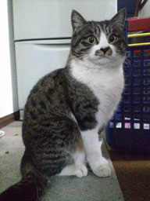

|
■2006/01/22/(Sun)01:46
あらためて
|

ハウルの動く城を見たのだけど、これって男女の幻想絵巻なのね。
あーあー、こーゆーこと言われたわーってことがちらほらと。
殿方ってこーゆーこと言って意中の女性を喜ばすの好きだよなーと。
でも、殿方役はキムタクで、姫役は倍賞千恵子なんだよねー…
やっぱり宮崎監督の世代で姫役だとそーなるのか…
…しかしもうこーゆーことでだまされない年頃になってしまったのだなーと。
ハウルもそーだが、ヒットするツボ、人を引き込むツボ、泣かせどころ、トキメキどころを心しているひとって羨ましい。
先天的に意識せずに人を惑わすフェロモンをふりまく人がいるよーに、好きなものを作って他人の心を惑わす人っているのよね
感情のツボって自分では自覚しているんだけど、それを表現するのってほんとに難しい。
さて話は変わって、実家で猫と戯れてきたんだんだけど、マメがすごーーーーーく変わっていた。
…近所のボス猫になってた…（メス猫なのに…）
ボス猫ってぴーんとしっぽを立ててあるくのね。凛々とした雄姿だ（しつこいようだがメス猫だけど）
モサたんがいなくなって寂しがっていたみーみたんも、元気にしてました。マメと比べると1/2サイズだけど…
家族全員、モサたんの話をすると、楽しく話しをしているはずが、目にはいっぱい涙をためて話をしているのが印象深い帰省でした。
|
| |